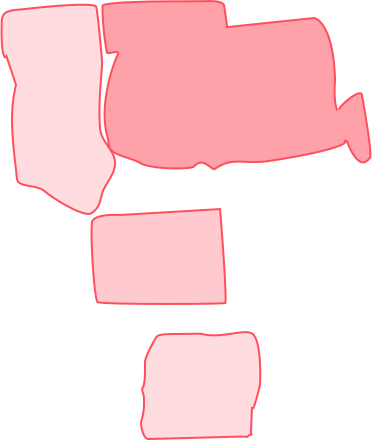
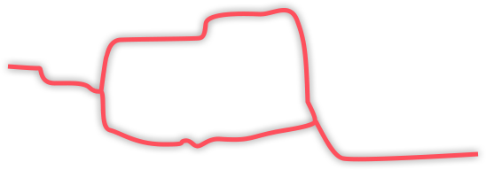
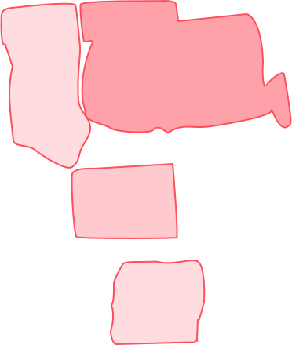
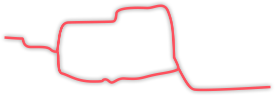

景观简介
北京大学校本部坐落在燕园，包括淑春园、勺园、朗润园、镜春园、鸣鹤园、蔚秀园、畅春园、承泽园等， 每逢节日，博雅塔会亮起绚烂的灯光，在明清两代是著名的皇家园林，数百年来，其基本格局与神韵依然存在。校园北与圆明园毗邻、西与颐和园相望。北京大学充分利用了这一难得的历史遗产，营建了风景如画的校园环境，使之既有皇家园林的宏伟气度，又有江南山水的秀丽特色。这里不仅有亭台楼阁等古典建筑，而且山环水抱，湖泊相连，堤岛穿插，风景宜人。校园内古木参天，绿树成荫，四季常青，鸟语花香，园林景色步移景异。优美典雅的环境内充满着丰富多彩、魅力无穷的校园生活，使学生可以同时感受到自然的风景和浓厚的人文气息。未名湖与博雅塔是北京大学的标志性景观，美丽的湖光塔影伴随着大师的背影，构成燕园中最美的图画。著名的“一塔湖图”指的就是未名湖湖畔的景色。

 


